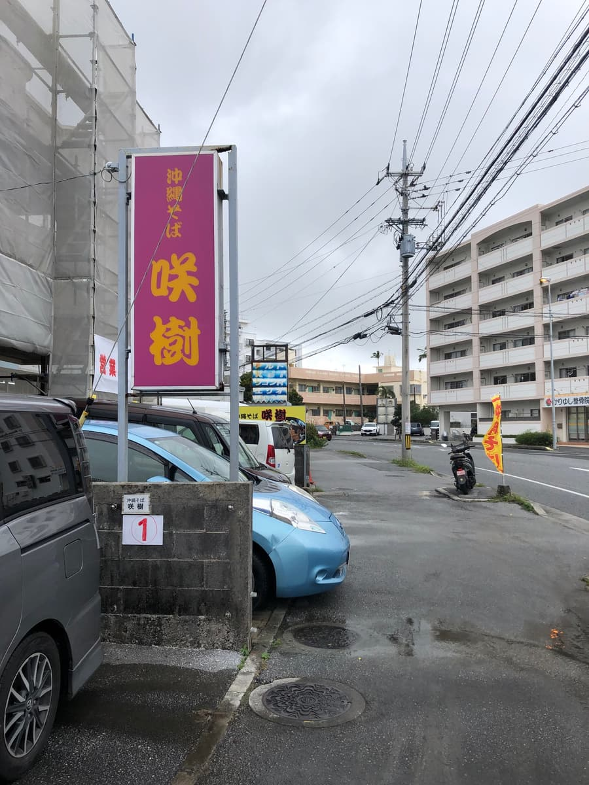
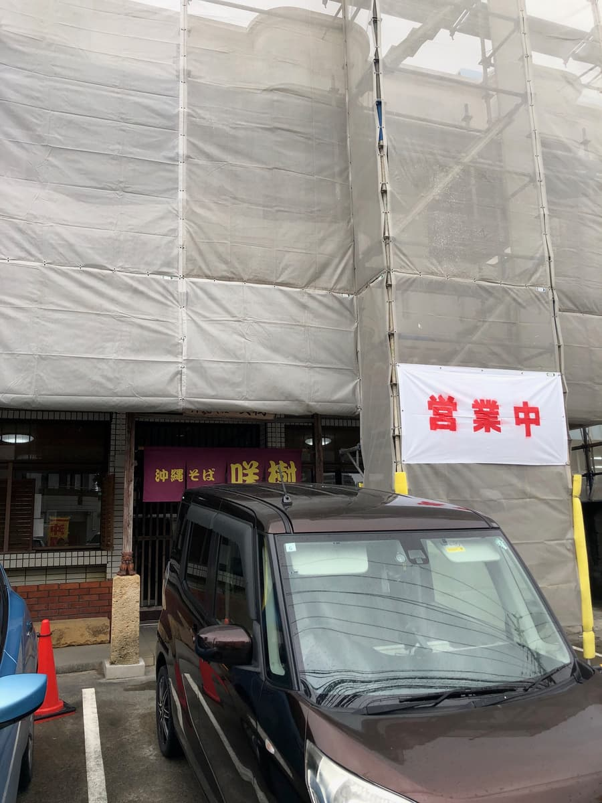
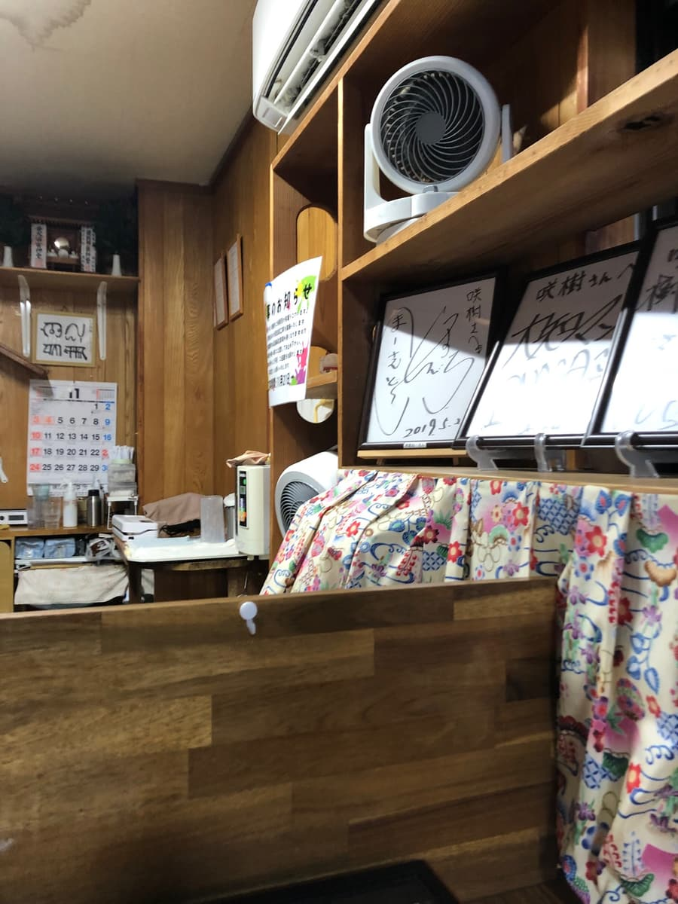
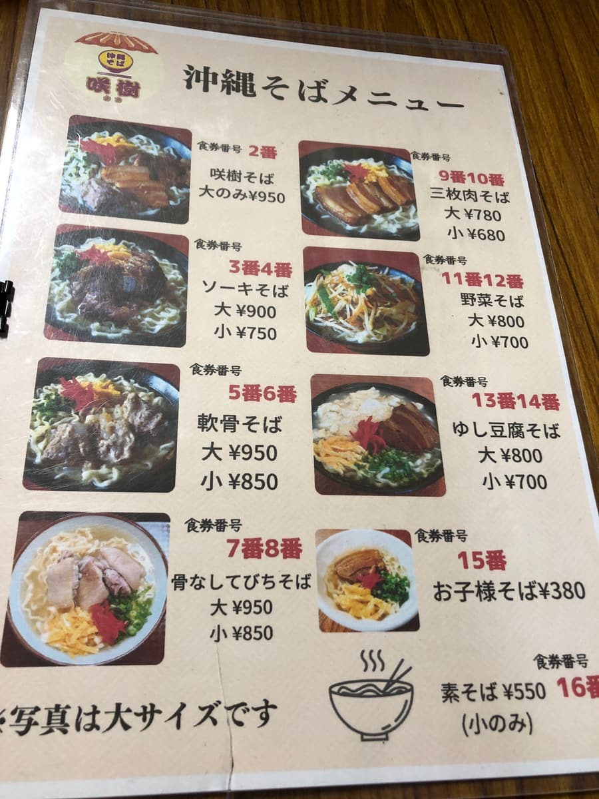
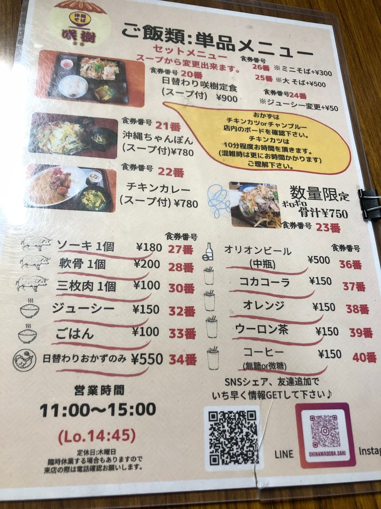
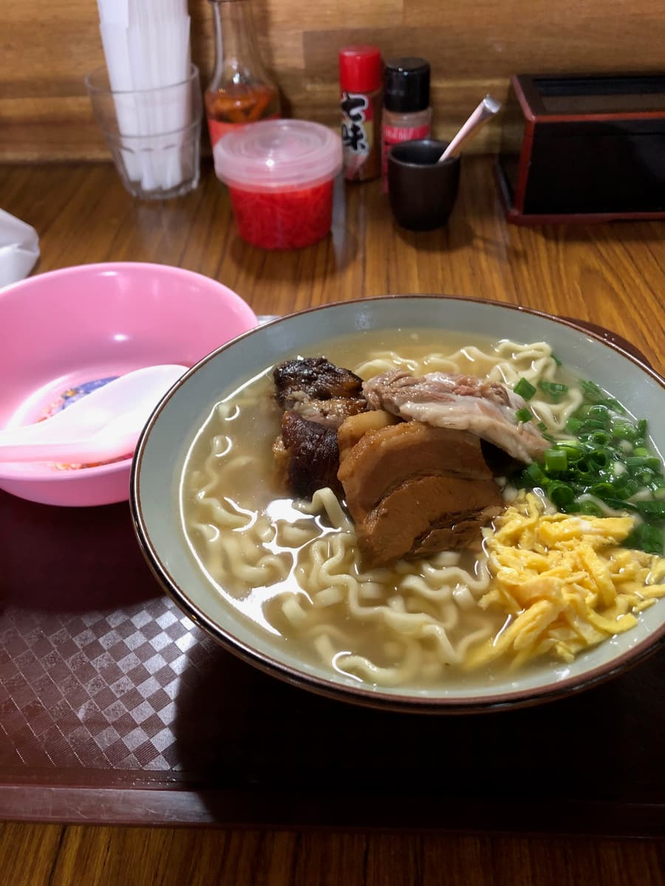
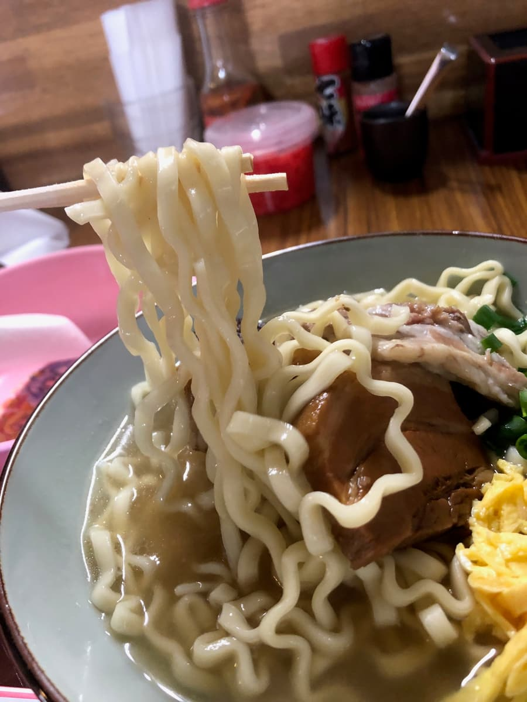

※こちらの記事はＡＩ（Chat GPT 4o）で作成したものを一部加筆しています😆
2024.11に食べました😄 今回は宜野湾市我如古（がねこ）にある「沖縄そば咲樹（さき）」さんに行ってきましたよ〜🌺。お店の前はちょっと工事中で足場が組まれていたんですが、営業中の大きな垂れ幕がしっかり掲げられていたので迷わず入店できましたね！こういうところ、地元の人たちに愛されてる感じがして好きなんですよ😊。


店内に入ると、サイン色紙が並んでいて、地元でも有名なお店なんだな〜と実感しました✨。

さて、今回は店名にもなっている「咲樹そば」を注文しました！メニューにはいろいろな種類の沖縄そばがあって迷ったんですが、やっぱりお店の名前がついてるメニューは気になりますよね😋。



出てきた咲樹そば、大サイズで950円。どーんと乗った三枚肉と本ソーキ、さらに柔らかそうな豚肉がトッピングされていて、ボリューム満点！紅ショウガや青ネギ、錦糸卵も彩りを添えてくれて、見た目からしてもう美味しそう…🤤。
スープをひと口いただくと、鰹と豚骨の合わせ出汁はどちらも感じられる味わい。ですが豚骨がやや強めに感じられる。地元の現場作業員の方が多く訪れているのも納得です。味がしっかりしているので、ガッツリ食べたい人にはピッタリかも👍。

麺は中太の縮れ麺で、柔らかめの茹で加減。個人的にはもう少しコシがあると嬉しいですが、スープが絡みやすくて悪くないですね〜。ちゅるちゅるっといけます。
トッピングの三枚肉は味がしっかり染みていて、甘めの仕上がり。ただ、ちょっと筋っぽさがあって硬めだったかな〜。歯ごたえがあるのが好きな方にはいいかもしれませんが、私はもう少し柔らかい方が好みですね😉。本ソーキは炙ってあるのか、少し香ばしさが感じられて美味しかったです！こちらも甘めの味付けですが、柔らかく煮込まれていて食べやすかったですよ。
店内は地元のお客さんで賑わっていて、こういうお店の雰囲気がまた良いんですよね〜。ちょっとおしゃべりしたり、のんびり過ごせる空気感があって、観光客だけじゃなく地元の人にも愛されてる感じが伝わります😊。
評価（9点/15点）：総合的には「普通に美味しい！」という印象。味が濃いめなので、ご飯やジューシーと一緒に食べるともっと満足度が上がりそうです✨。こちらのお店も一度は如何でしょうか😆
麺 ：★★★☆☆（3）
スープ：★★★☆☆（3）
具 ：★★★☆☆（3）